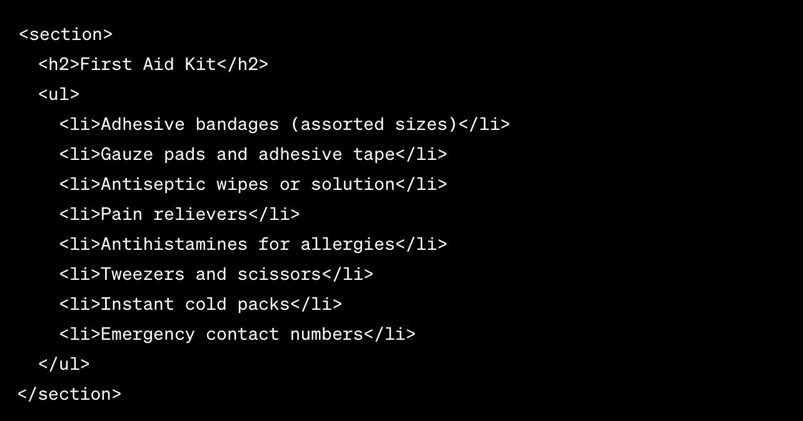
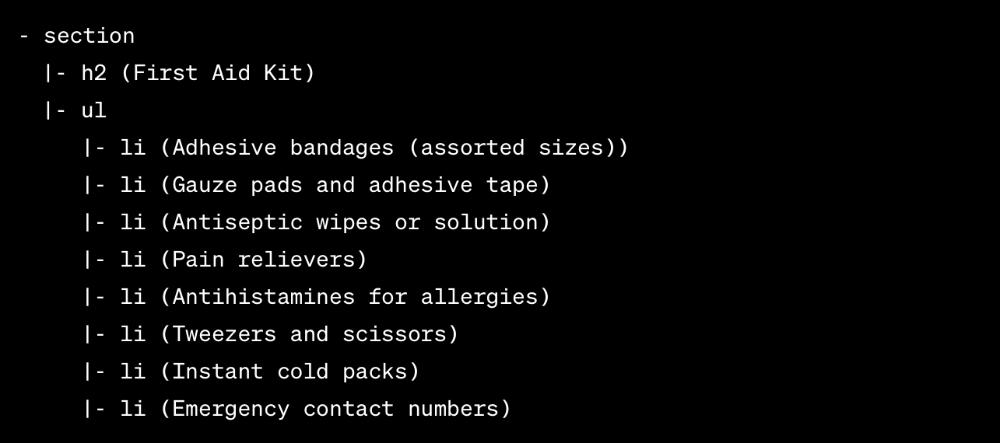
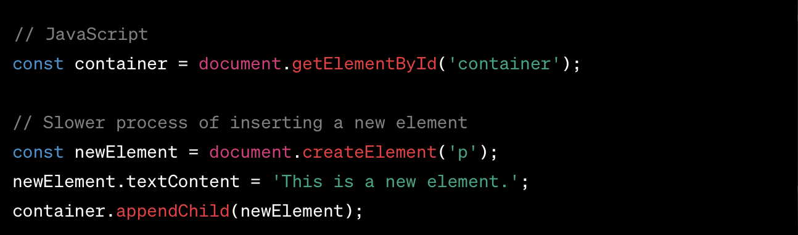
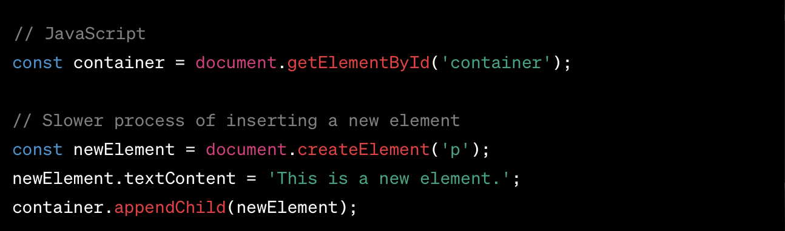

React Virtual DOM

HTML and the Document Object Model (DOM)
A "First Aid Kit" using HTML
A tree-like representation for the "First Aid Kit"
Updating vs Creating New Elements 

React Virtual DOM: A Game-Changer
- Data changes in React component
- New Virtual DOM representation created
- Comparison with previous Virtual DOM
- Identifying minimal changes for actual DOM sync
- Efficient application of changes to real DOM
- Minimizing unnecessary updates and re-renders
PROS:
- Enhanced Performance
- Efficient Updates
- Abstraction and Simplicity
- Cross-Platform Compatibility
React DOM: A Powerful Tool for Building Modern UIs
Angular DOM
React Virtual DOM
Vue Virtual DOM
React Virtual DOM